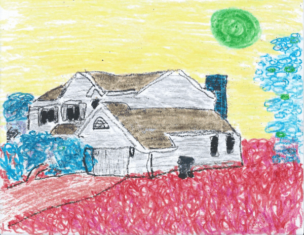

XXIV.
Winfield and I went over to Hector’s house, but Brazil wasn’t there to open the door. Nonetheless, we stabbed a Penguin Liberation Front flag into the garden bed and left him a note. The note said: The Kingdom of Antarctica is attempting to humanize penguins and turn them into cybernetic animals controlled by electric sensors rather than their divine spirit. The Penguin Liberation Front demands the cessation of hypercapitalistik reprogramming of penguins and the dissolution of the fraudulent monarchy seeking to divide the last pristine continent into tiny rectangular tracts of land for sale to the highest bidder.